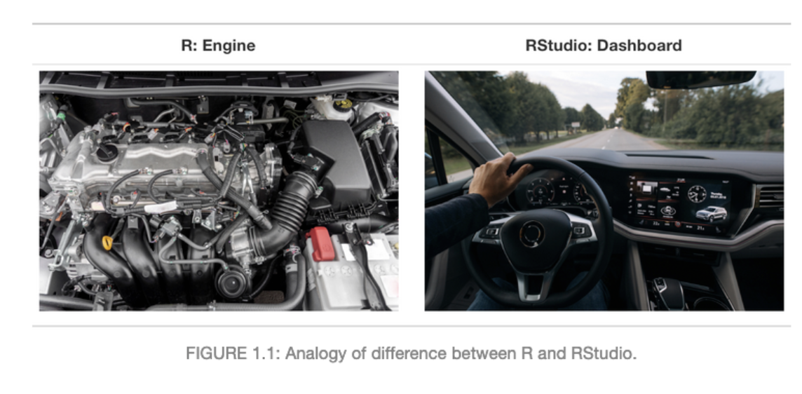

2022-06-01
欢迎来到《21天 极速学会R语言与数据分析》。
本书旨在帮助你学习使用R和RStudio来处理和分析你的数据。从最基本的R操作到分析自己的数据，这本书专门为没有编程基础及统计基础的小白设计。本书由浅到深，后面也会介绍及展示高级分析如机器学习模型等内容。
希望能够帮助同学们快速掌握一门数据分析技能。
贡献者: jamesjin63，AnotherDayu
准备工作
真正开始用 R 语言之前，我们需要下载R安装包【R官网下载】。根据自己电脑选择安装包。
R 语言安装完成后，我们还需安装 RStudio【RStudio官网下载】开发环境（虽然基本的 R 控制台也能工作）。也根据自己电脑系统下载安装。
R与Rstudio的关系，就好比R是汽车发动机核心，Rstudio是装载发动机的汽车且装备一些列的配件。

注意：
- 安装好 R 之后，再安装 RStudio；
- Windows 系统请将软件全部安装在 C 盘的默认位置 (可以自定义更改，但是R跟Rstudio的安装必须在同一个文件目录中)，否则程序将可能无法更新或运行。
安装视频：R+Rstudio程序安装
本书将从以下几个部分进行介绍
基础部分
- 第一章：R基本操作
- 第二章：数据读写
- 第三章：数据清洗
- 第四章：数据可视化
数据分析
- 第五章：基础统计知识
- 第六章：GLM模型
- 第七章：GAM模型
番外篇
- 第八章：gglot2绘图
- 第九章：字符串处理
- 第十章：地图绘制
- 第十一章：机器学习模型
Contribution
If you would like to make a content contribution, please contact with us first via Github issues or by jamesjin63@163.com. We are implementing a schedule for updates and are creating a contributor guide.
Epi-Hub Collaborators --- National Institute of Parasitic Diseases, Chinese Center for Disease Control and Prevention; School of Global Health, Chinese Center for Tropical Diseases Research, Shanghai